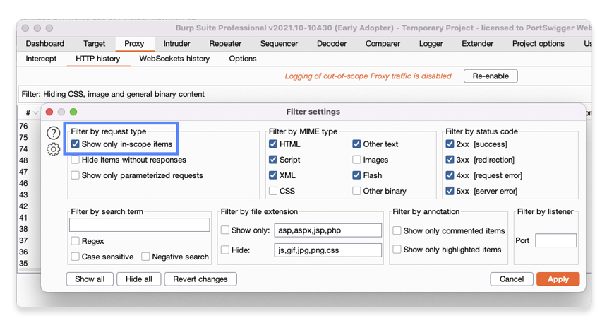

初めてBurpでトラフィックをプロキシすると、ブラウズによるリクエスト数の多さに驚くかもしれません。Burpには、ノイズをできるだけ減らすためのさまざまな機能があります。これにより、重要な部分に時間と労力を集中させ、対象のWebサイトの挙動をより簡単に分析できます。
このチュートリアルでは、次の手法を学びます:
何をテストする場合でも、ターゲットスコープの設定は最初に行うべきことのひとつです。Burpを最大限に活用するためだけでなく、テストの許可を得ていないホストに不正なリクエストを送信してしまうことも防げます。
ノイズを減らすもっと簡単な方法のひとつは、外部のブラウザではなく、Burpの内蔵ブラウザを使うことです。これは、余計なトラフィックの発生を最小限に抑えるようあらかじめ設定されています。
Proxy > インターセプトタブに移動し、内蔵ブラウザを起動します。それで次のラボを開きます:
https://portswigger.net/web-security/os-command-injection/lab-simple
ラボが読み込まれたら、Proxy > HTTP履歴タブに移動します。意図的に脆弱性を作り込んだラボのショッピングサイトへのリクエストに加えて、portswigger.netへのリクエストや、第三者のサービスやブラウザの機能に関連するさまざまなホストへのリクエストが表示されます。
Target > サイトマップタブに移動すると、プロジェクトのサイトマップにもこれらのホストのエントリがあることに気がつきます。
https://<YOUR-LAB-ID>.web-security-academy.netのエントリを右クリックして、スコープに追加を選択します。
ここでBurpは、プロジェクトのスコープを定義したことを認識し、スコープ外アイテムのデータのログ出力を停止するかどうかを尋ねてきます。はいをクリックします。
以降のブラウザからの新しいリクエストは、<YOUR-LAB-ID>.web-security-academy.netに送られた場合のみBurpに表示されるようになります
スコープ外トラフィックのログ出力は、Proxyタブの上部にあるボタンをクリックすると、いつでも再有効化できます。
Target > スコープタブに移動し、URLのリストにラボのURLが追加されていることを確認します。
デフォルトでは、このホストのすべてのパスまたはエンドポイントがスコープ内とみなされます。特定のパスを除外するには、次の方法で可能です:
正規表現を使ってスコープを設定するさらに高度なオプションがありますが、これについては別のチュートリアルで説明します。
Burpのツールには、さまざまなフィルタオプションがあり、現在のタスクに関係のないデータを一時的に非表示にできます。
Proxy > HTTP履歴タブに移動します。Burpはスコープ外のトラフィックはもう記録していませんが、スコープを設定する前にログ出力されたリクエストがまだ履歴に表示されています。
リクエストのリストにすぐ上に、フィルタバーがあります。ここには、現在アクティブなフィルタの概要が表示されています。
一部のフィルタはデフォルトで有効になっているため、すでにいくつかのエントリが含まれている場合があります。このバーをクリックすると、フィルタ設定が開きます。
MIMEタイプ、レスポンスステータスコード、特定の検索語などに基づいてフィルタリングするためのさまざまなオプションがあります。Burpの他のツールにも、オプションが異なる同様のフィルタバーがあります。
フィルタ設定ダイアログの左上で、スコープ内のアイテムのみ表示オプションを選択し、適用をクリックします。
他のホストへのすべてのリクエストがProxy履歴から消え、ラボに関連したリクエストに集中できるようになったことを確認してください。
これで、Burpで基本的なターゲットスコープの設定と、フィルタを適用する方法がわかりました。これらの簡単なスキルは、ライブサイトをテストするために不可欠で、Web Security Academyのラボを完了するのがより簡単になります。